Скачать презентацию
Контакты: pipeCAD@mail.ru
|
OIL&GAS
PipeLine Engineering System в среде AutoCAD
Область применения
Автоматизация проектирования
следующих линейных трубопроводов:
Газопроводы
и нефтепродуктопроводы высокого давления согласно
СНиП2.05.06
Газораспределительные системы по
СНиП2.04.08-87 и СНиП42-01-2002
Водопроводы, согласно СНиП2.04.02
Цели
создания программы
-
Основная
цель создания программы – Автоматизация
проектирования трубопроводов повышение качества
проектируемых трубопроводов с минимизацией стоимости
проекта, увеличение скорости проектирования.
-
Повышение
качества проектирования может развиваться в двух
направлениях: исключение расчетных ошибок, выбор
оптимальных решений прохождения трассы трубопровода,
что является разными гранями одной задачи – выдачи
качественного проекта.
-
Данный
программный комплекс вносит изменения, в
существующую технологию проектирования делая упор на
указанные направления.
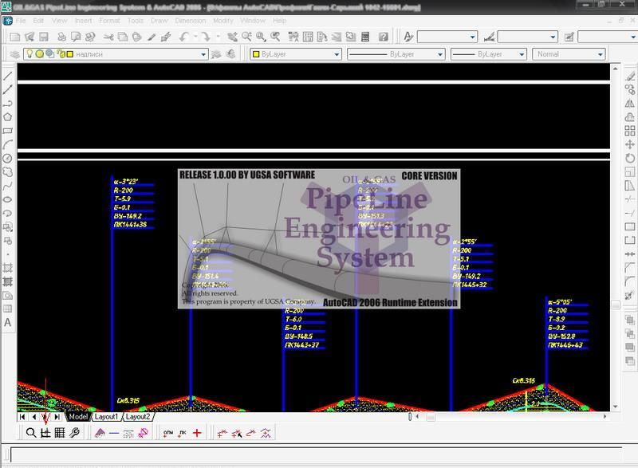
рис
1 (загрузка программы)
Основные
возможности программы
- Создавать
Цифровую Модель Рельефа (ЦМР) на основе изыскательских
чертежей или отметок с координатами (x, y, z). рис 1.
- Выполнять
трассировку трубопровода с учетом пересекаемых
коммуникаций.
- Вычерчивать
профиль поверхности(черный профиль) трассировонного
трубопровода см. рис. 10.
- Редактировать
профиль трубопровода с учетом круговых кривых
(тангенс, бисектриса) , отводов, футляров и т.д. см.
рис 2, 3.
- Оформление плана
– Возможность расчета, создания
и отображение полок, а также других планировок.
Вычерчивание полок, откосов в 3D, сечений через
заданное расстояние, а также подсчет 3D объемов
земляных работ. см. рис. 5, 6, 7, 8, 9.
- Система подсчета объемов работ в
при помощи программы Excel см. рис 4.
- Сохранение
в сетевую Базу Данных и сетевой доступ к проектам
расположеным в единой Базе Данных (БД).
- Создание
сжатого профиля из нескольких профилей из БД
- Экспорт
данных в файл открытого формата ПС СТАРТ см.
рис. 11, 12. для расчета на
прочность и устойчивость.
- Экспорт данных в файл
открытого формата CPIPE для расчета на прочность и
устойчивость.
Создание Цифровой Модели Рельефа
(ЦМР)
В
программе возможно создовать Цифровую Модель Рельефа
(ЦМР) по текстовому файул, точкам (Dbpoint) на чертеже
поднятыми по оси Z, по тексту отметок и их положению в
чертеже, по окружностям поднятыми по оси Z.
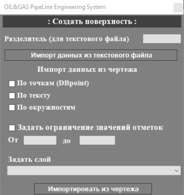
рис 1
Выполнять трассировку трубопровода с учетом
пересекаемых коммуникаций.
В программе
возможно выполнять трассировку трубопровода по ЦМР с
учетом пересекаемых коммуникаций см. видео ниже
Вычерчивать
профиль поверхности(черный профиль)
трассировонного трубопровода.
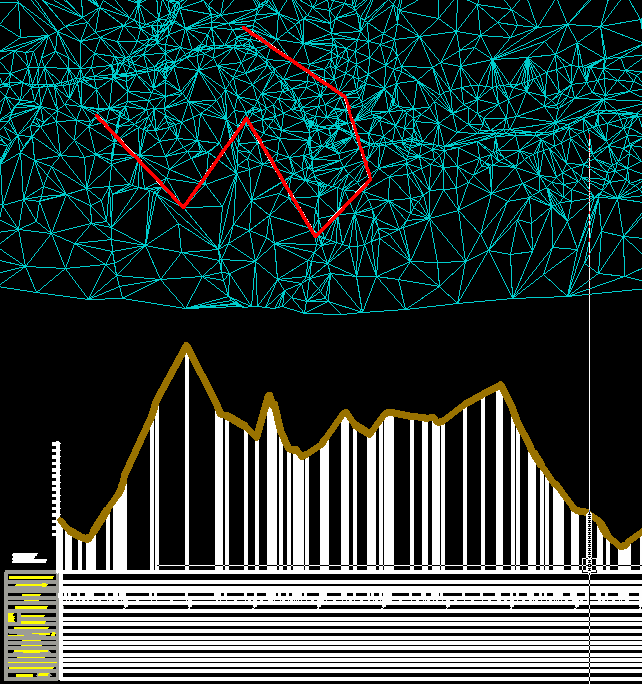
Рис
10
Редактирование профиль трубопровода.
Исходные
данными для программы являтся черный профиль. Для того
чтобы создать новый проект надо в нижней панели
инструментов выбрать меню "Создать рабочую область"(на рис
1 красная стрелка). Далее появится диалоговое окно которое
изображенно на рис 2.
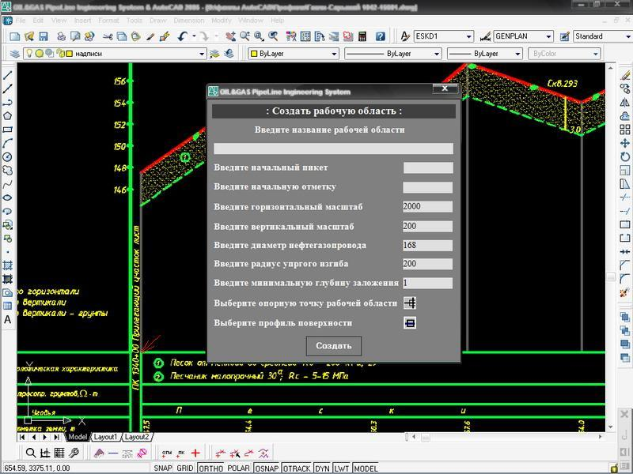
рис 2
В данном диалоговом окне вы вводите исходные данные для
создания "Рабочей области" также выбераете "Опорную точку"
котораю показана красной стрелкой на рис 2. и "Профиль
поверхности" это краснная полилиния на рис 2. После этого
автоматически создается "красный профиль" с глубиной
заложеня введеном в данном диалоговам окне. После
заполненя всех полей нажимаем кнопку "Создать". Далее
выбераем в нижней панели инструментов меню "Табличный
редактор" (на рис 3 красная стрелка). Появляется палитра с
таблицой редактирования которую вы можете присоединять к
любой стороне также сделать ее автоматически скрываемой
или прозрачной. Также в области модел спайс в можете
наблюдать после остановки подсказку с текущем пикетом и
отметкой.
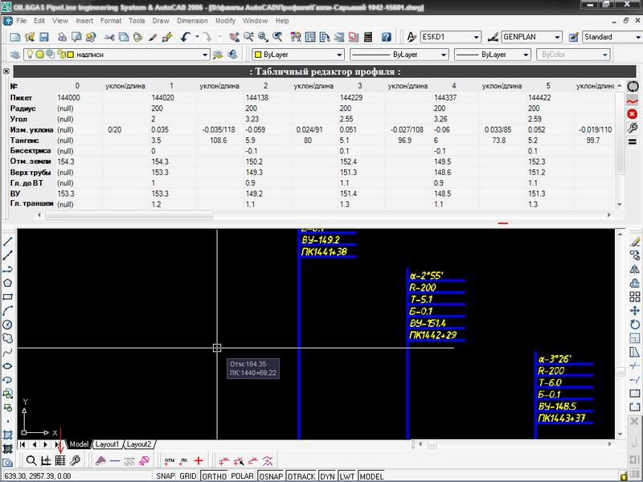
рис 3
В таблице вы можете
редактировать пикет, отм, радиус изгиба а также
устанавливать отводы. Также вы можете скачать видео
ролик наглядно показывающий работу программы.
Система подсчета
объемов работ в при помощи программы Excel
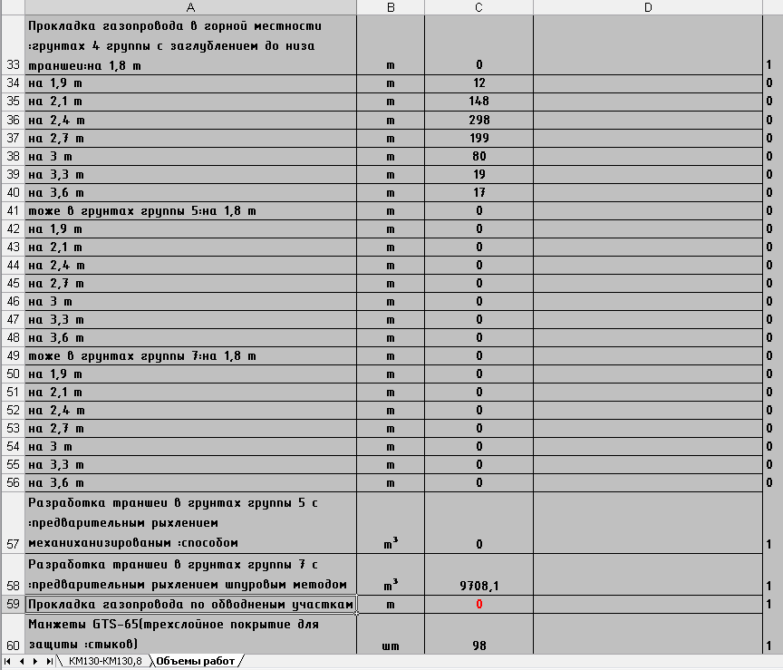
Рис
4.
Оформление плана - Возможность
расчета, создания и отображение полок, а также других
планировок. Вычерчивание полок, откосов в 3D, сечений
через заданное расстояние, а также подсчет 3D объемов
земляных работ.
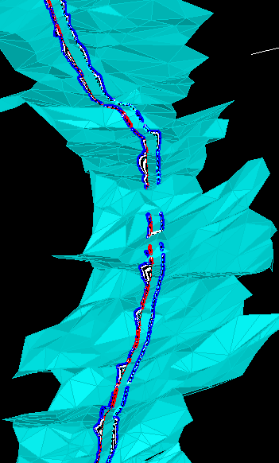
Рис
5.
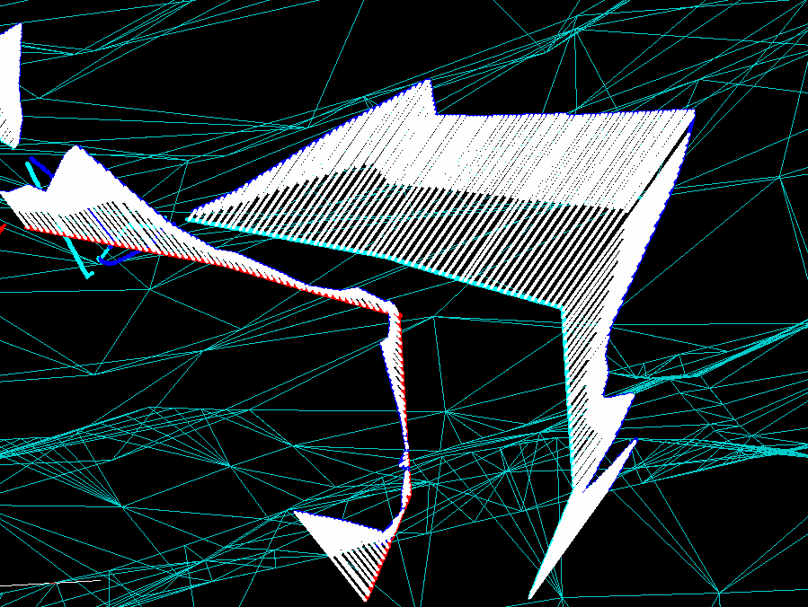
Рис
6.
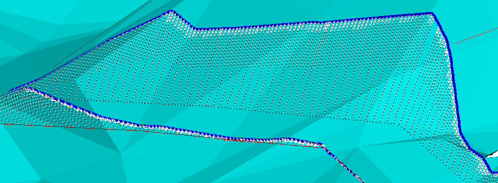
Рис
7.
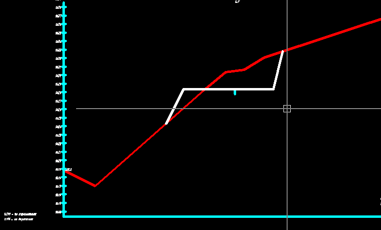
Рис
8.
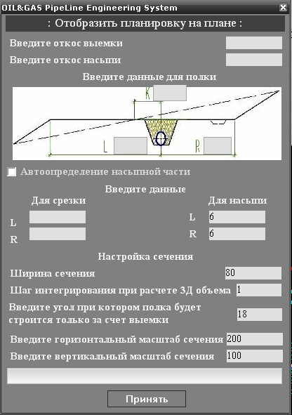
Рис
9.
Экспорт в файл
открытого формата ПС «СТАРТ»
«Программы семейства СТАРТ
предназначены для расчета прочности и жесткости
трубопроводов различного назначения, имеющих произвольную
конфигурацию в пространстве, при статическом и циклическом
нагружении, а также толщин стенок труб и соединительных
деталей на давление»
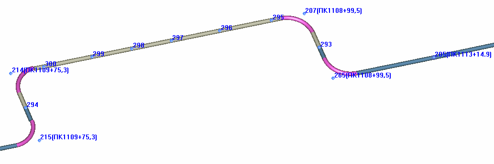
Рис
11.
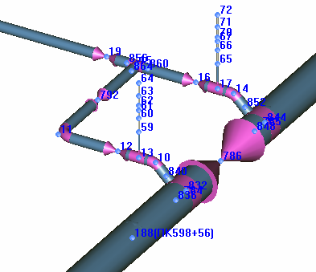
Рис
12.
Экспорт данных в файл
открытого формата CPIPE для расчета на прочность и
устойчивость.
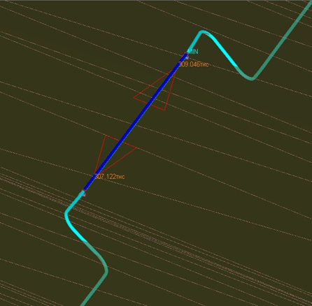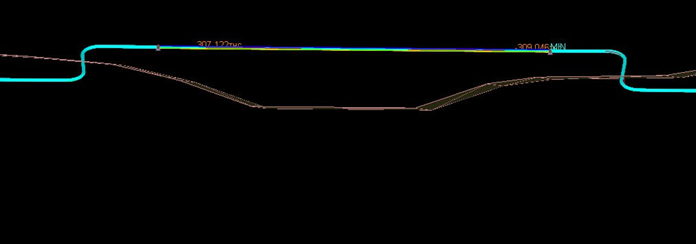
Внимание!
Подвал чертежа, флажки и прочее оформление
настраивается индивидуально под каждого клиента!
|